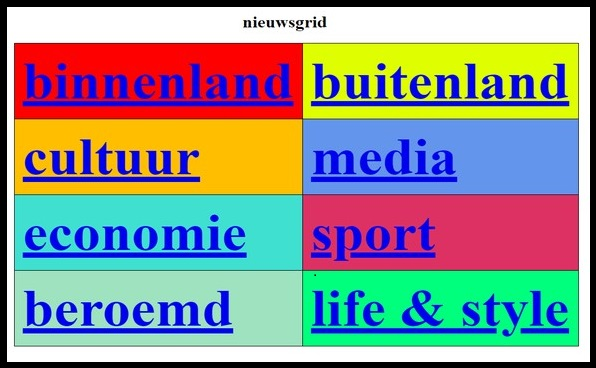

Projectweek Systems engineering & analysis
Voor het vak Systems engineering & analysis heb ik met mijn team (medestudenten Taro Verschueren en Seppe Wuyts) de opdracht gekregen van mevrouw Kenens tijdens Professional Skills 2 de opdracht gekregen om een saaie koffiehoek in het IT lokaal naar een interessantere koffiekoek om te toveren. De opdracht voor ons project hield in dat je dat je op een klein schermpje het nieuws moest kunnen zien maar ook je eigen foto maken en dat je een opinie peiling kon invullen. Dat was de vraag zodat het wachten op koffie leuker werd. Mijn taak bestond voornamelijk uit het schrijven en het opmaken van de website en de enquête. Ik moest er voor zorgen dat er verschillende thema’s van de krant in een tabel schema stond op de website. Daarbij wanneer er iemand op een thema drukte moest er een krantenartikel verschijnen. Het moeilijkste was om de bijhorende foto’s bij de artikelen te plaatsen. Overigens moest ik ook voor de opmaak zorgen van de enquête. Hieronder ziet u de resultaten van mijn werk.

Van deze taak heb ik vooral geleerd om te luisteren naar de klant. Maar ik heb ook geleerd om samen te werken met groepsgenoten en naar hun te luisteren. En zo elkaars sterktes te benutten wat zorgde voor dat het project heel vlot verliep.